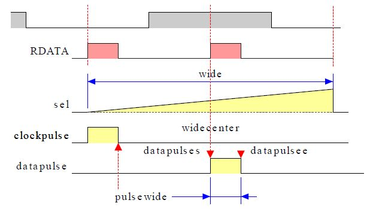
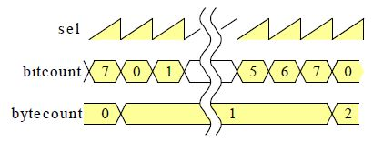

|
検証 |
|
RDATA作成 |
ビットセルの行程は sel で表します sel の 0 はクロックパルスの位置になります sel の幅は wide です sel の半分のところがデータパルスの位置です。
| 図22: RDATA作成 |
|
 |
|
ビットとバイトの作成 |
RDATA はビットセルが連続したものですがビットの bitcount とバイトの bytecount で構成します。
| 図23: ビットとバイトの作成 |
|
 |
ビットセルの特性はセルの幅やクロックパルスやデータパルスのあるなしがありますがビットの bitcount とバイトの bytecount で表すセルの位置で設定します。
|
|
|
検査事項 |
データ分離器は FM 方式と MFM 方式で分けて検査を行います。 データ分離器の機能は SYNC 中に FDD のシリアルデータのデータパルスに同期した WINDOW を作ることです。 このために下記の項目を見る必要があります。
機能実行譜 LDL08A24A0SIM .L
FM方式の検証結果 LSIM_FM
MFM方式の検証結果 LSIM_MFM
検証結果の閲覧は解凍後に
VIEW
を実行します。